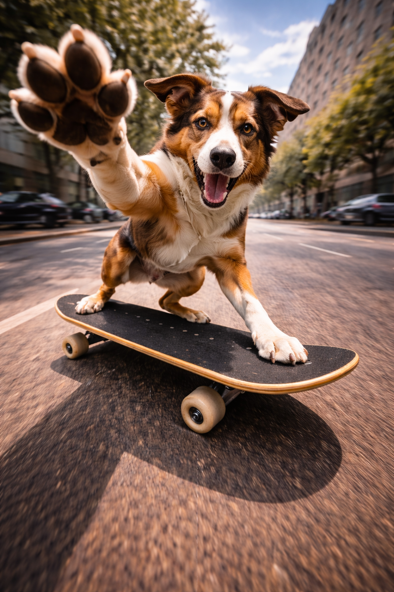

🔥 Kein Zauber. Nur Struktur.
Wir zerlegen einen Prompt in klare Bausteine – und zeigen,
was passiert, wenn du genau eine Stelle änderst.
Ziel: Du sollst Prompts nicht „glauben“, sondern verstehen.
Du kannst danach denselben Aufbau auf eigene Ideen übertragen.
TL;DR
Prompts sind keine Magie. Sie sind Bausteine (Identität, Kamera, Licht …).
Änderst du einen Baustein, ändert sich das Bild meist vorhersehbar.
1 Block ändern → vergleichen
Rest gleich lassen → Ursache klar
Das Ziel ist Verständnis, nicht Perfektion
Wichtig
Diese Seite verkauft kein „perfektes Prompt“.
Sie zeigt dir die Hebel – damit du deinen eigenen Weg findest.
Tipp: Du brauchst nicht „kreativ“ zu sein. Ändere nur ein Wort – und beobachte den Effekt.
Beispielprompt: Skateboard
Das ist der Ausgangspunkt. Von hier aus ändern wir gezielt einzelne Bausteine.
🧾ORIGINAL PROMPT
Ultra-detailed cinematic action scene.
The dog from the reference photo is captured mid-air while skateboarding.
Reproduce its natural fur colors, markings, and body features exactly as in the reference photo.
Do not add a collar or harness. The fur should appear glossy and highly detailed.
– Camera angle: Low-angle fisheye perspective, extreme dramatic distortion.
– One exaggerated paw reaches forward into the extreme foreground, as if giving a high-five.
– All other paws are placed firmly on the skateboard.
– The skateboard is tilted mid-trick, dynamic and realistic.
Background: Urban street environment with motion blur.
Lighting: Epic cinematic lighting.
Visual style: analog film grain, gritty, energetic.
Constraints:
– Natural anatomy
– No accessories besides skateboard
– Strong focus on movement & intensity.
Hinweis: Das Referenzfoto ist der „Identity Anchor“. Der Rest ist Szene/Styling.
Original Output (assets/…/original.PNG)Referenz Foto
Warum Englisch – und warum diese Struktur
Du musst Prompts nicht so schreiben wie ich. Das hier ist kein „richtig/falsch“ – sondern ein Weg,
um Ergebnisse reproduzierbarer zu machen und Änderungen gezielt testen zu können.
1) Trainingsdaten-Realität
Viele Bild- und Sprachmodelle wurden stark mit englischen Texten trainiert.
Deutsch funktioniert oft – aber Englisch ist meist präziser, konsistenter
und leichter zu debuggen, wenn ein Prompt „driftet“.
Deutsch klappt auch – vor allem bei klaren, einfachen Prompts.
Wenn Pose/Objekte kippen, ist Englisch oft leichter nachzuschärfen.
Es geht nicht um Sprache – sondern um Klarheit.
2) Struktur ist ein Werkzeug
Ich schreibe in Blöcken (Motiv, Kamera, Licht, Stil, Constraints), damit ich nichts vergesse
und gezielt einzelne Hebel drehen kann.
Du kannst denselben Inhalt auch als Fließtext schreiben.
Wenn alle Infos drin sind, wird das Ergebnis oft ähnlich.
Für Lernfortschritt: immer nur 1 Block pro Test ändern.
Merksatz: Das ist ein Weg – nicht der Weg. Ziel ist Verständnis, nicht Copy/Paste.
Optional: Wenn du lieber frei schreibst …
Dann denk trotzdem an die üblichen Stellschrauben:
Motiv, Kamera, Licht, Hintergrund, Stil, Constraints.
Wenn das enthalten ist, kommst du oft sehr weit – auch ohne Block-Struktur.
Block 1: Identität (Referenzfoto)
Dieser Block sorgt dafür, dass es dein Tier bleibt – und nicht irgendein generischer Hund.
Identity Transfer
Die wichtigste Regel: „Wie auf dem Referenzfoto“ – klar und wiederholt.
Kurz gesagt: Dieser Block entscheidet, ob es wirklich dein Hund bleibt
(Fell, Muster, Proportionen) – oder ob das Modell zu „Random Dog“ driftet.
Mehr anzeigen
Prompt-Ausschnitt
The dog from the reference photo is captured mid-air while skateboarding.
Reproduce its natural fur colors, markings, and body features exactly as in the reference photo.
Was macht das?
Verankert Fellfarben, Muster, Proportionen und den „Look“ am Referenzfoto.
Ohne diesen Block driftet das Ergebnis schnell zu „Random Dog“.
Typische Anpassungen
„dog“ → „animal“ (für jedes Tier)
„captured mid-air“ → „standing / sitting“
mehr Details zu Fell/Markings (wenn nötig)
Risiko
Zu viel Zusatzbeschreibung kann das Referenzfoto „überschreiben“.
Besser: kurz + eindeutig + wiederholbar.
Original (Referenz stark)

Variante: Identity zu schwach (identity_weak.PNG)
Block 2: Kamera / Lens
Kamera ist ein „Look-Schalter“. Fisheye wirkt krass – aber ist fehleranfälliger.
Fisheye vs. realistischer Look
Ein einzelner Satz verändert die gesamte Bildphysik.
Kurz gesagt: Kamera-Wörter sind ein Look-Schalter.
Fisheye = maximal dynamisch, aber anfälliger für anatomische Fehler.
Mehr anzeigen
Prompt-Ausschnitt
– Camera angle: Low-angle fisheye perspective, extreme dramatic distortion.
Was macht das?
Fisheye verstärkt Dynamik durch Verzerrung: Vordergrund riesig, Background gebogen.
Stark für Action – riskant für Anatomie.
Typische Anpassungen
„fisheye“ → „35mm documentary photo“ (stabiler)
„extreme distortion“ → „no distortion“
Low-angle beibehalten, aber Verzerrung rausnehmen
– Camera angle: 35mm documentary photo, low-angle, no distortion.
Risiko
Extreme Linsen/Verzerrungen erhöhen die Fehlerquote (Pfoten, Board, Proportionen).
Wenn es “driftet”: vereinfachen.
Original: FisheyeVariante: 35mm (cam_35mm.PNG)
Block 3: Pose & Action
Action entsteht durch klare Körperlogik: Was macht welche Pfote – und warum?
Paw / Trick / Board
Je genauer die Pose, desto weniger Drift – aber: nicht überladen.
Kurz gesagt: Pose-Details steuern Körperlogik.
Je klarer „wo sind die Pfoten“, desto stabiler wird das Ergebnis – aber nicht überladen.
Mehr anzeigen
Prompt-Ausschnitt
– One exaggerated paw reaches forward into the extreme foreground, as if giving a high-five.
– All other paws are placed firmly on the skateboard.
– The skateboard is tilted mid-trick, dynamic and realistic.
Was macht das?
Erzwingt eine „Story Pose“ (High-five) + Stabilität (andere Pfoten am Board).
Das gibt Bewegung und Fokus.
Typische Anpassungen
High-five rausnehmen → stabilere Anatomie
„ALL FOUR paws … visible contact“ hinzufügen
Board-Logik konkretisieren (Kontaktflächen)
– The dog stands naturally on the skateboard.
– ALL FOUR paws are placed firmly on the deck at the same time.
– Each paw has visible contact with the board surface.
– No lifted paws, no jumping, no exaggerated gestures.
– Balanced stance, natural weight distribution.
Risiko
Zu viele Pose-Details können miteinander konkurrieren.
Besser: klare Priorität + wenige, testbare Sätze.
Constraints:
– Natural anatomy, correct paws count
– No collar, no harness, no extra accessories
– Only skateboard as prop
– Keep fur markings identical to reference
Risiko
Zu viele Constraints (lange Listen) können sich widersprechen oder die Priorität verwässern.
Besser: kurz, hart, testbar.
Hinweis zu Tools, Constraints & Grenzen der Methode
Die Logik bleibt gleich – die Stärke der Effekte kann variieren.
Hinweis zu Tools
Die gezeigte Methode funktioniert modellübergreifend, aber nicht jedes Bild-Tool reagiert gleich stark auf dieselben Formulierungen.
Manche Modelle gewichten Kamera, Stil oder Referenzbilder stärker als andere.
Die Logik bleibt identisch – nur die Stärke der Effekte kann variieren.
Soft vs. Hard Constraints
Nicht alle Einschränkungen wirken gleich stark.
Vage Formulierungen helfen – konkrete wirken zuverlässiger.
Wenn ein Modell Fehler macht …
… ersetze vage Begriffe durch konkrete Leitplanken.
Das erhöht Kontrolle – besonders bei Anatomie, Symmetrie und Komposition.
Soft Constraints (weich)
natural
realistic
clean
cinematic
Hard Constraints (konkret)
both eyes visible
2 arms visible
symmetrical face
no extra fingers
centered composition
Wo diese Methode an Grenzen kommt
Die „nur einen Block ändern“-Logik bringt Kontrolle – aber nicht in jeder Situation.
1) Gekoppelte Parameter
Kamera, Licht und Stil beeinflussen sich gegenseitig.
Änderst du z. B. „dramatic lighting“, kann sich auch Pose oder Anatomie verändern.
Dann ist die Änderung nicht mehr vollständig isoliert.
2) Stark stilisierte Modelle
Manche Modelle priorisieren Stil stärker als Struktur.
Ein dominanter Stil kann Kamera oder Anatomie übersteuern.
3) Vage Prompts
Wenn der Basisprompt zu offen ist, reagiert das Modell stärker auf Zufall.
Erst klare Struktur → dann isolierte Tests.
4) Kein Ersatz für Iteration
Auch saubere A/B-Tests garantieren kein perfektes Bild.
Sie helfen zu verstehen, warum etwas funktioniert oder scheitert.
Diese Methode macht Ergebnisse kontrollierbarer – nicht perfekt.
Was oft schiefgeht (und warum)
Wenn du das erkennst, verschwindet 80% der Frustration.
❌ Zu viel auf einmal
Wenn du mehrere Blöcke gleichzeitig änderst, weißt du nicht, was den Effekt ausgelöst hat.
❌ Fließtext-Overkill
Sehr lange Prompts können Prioritäten verwässern. Oft ist „klar + kurz“ stabiler.
❌ „Mehr Adjektive = besser“
Zu viele Stilwörter konkurrieren miteinander. Ergebnis: Drift, Chaos, KI-Poster-Look.
✅ So debugst du richtig
1 Block ändern
3 Runs generieren
Vergleichen → erst dann weiter
✅ Wenn’s „driftet“
Identität verstärken (kurz + wiederholt)
Kamera vereinfachen (kein Fisheye)
Constraints konkretisieren
✅ Sprachen-Realität
Deutsch funktioniert oft. Wenn etwas unklar wird, ist Englisch leichter zu „debuggen“,
weil viele Modelle darauf stärker trainiert sind.
✅ Reihenfolge
Erst Identität stabilisieren, dann Kamera/Pose, dann Licht/Style, dann Constraints feintunen.
✅ Test-Disziplin
Gleicher Seed/Settings helfen – aber wichtiger ist: immer nur einen Hebel verändern.
Minimal-Regel für Lernfortschritt: Immer nur 1 Block ändern, dann vergleichen.